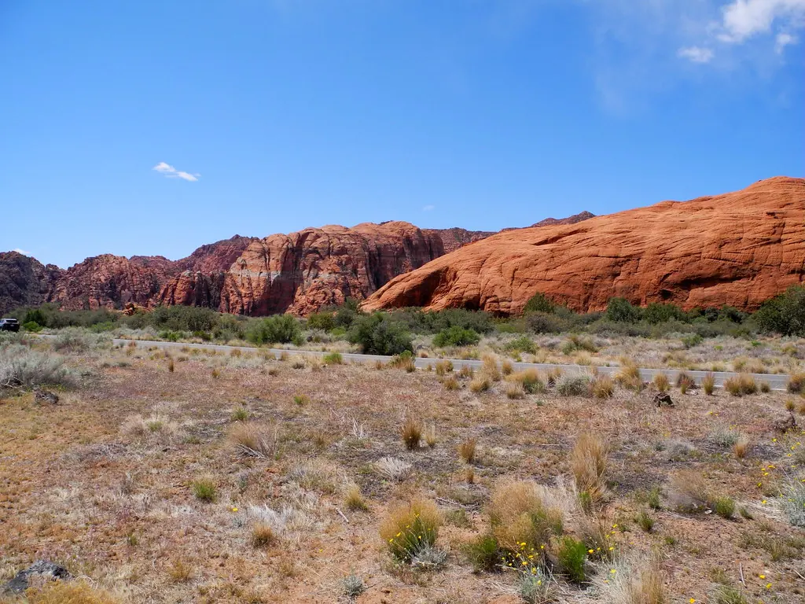

St. George · Southern Utah · polyurethane foam lifting
Concrete leveling in St. George. Measure the lip, then fix it.
St. George Concrete Leveling does concrete leveling in St. George and across Southern Utah: precision foam injection and slab lifting for sunken driveways, sidewalk trip hazards, patios, garage floors and pool decks. Licensed and insured, with free on-site estimates.
How big is your lip? Drag to set it.
Rules: 2010 ADA Standards §303.2–303.4. They apply to public places; for a home they’re a good yardstick.
What we level
Pick the surface that sank.
Driveways scrape bumpers and push water toward the garage. Sidewalk lips trip people. Pool decks settle from washouts and irrigation leaks. Each surface has its own page.
How it works
Straightforward, safe, and transparent.
- 01On-site assessment
We inspect your slab, identify causes of settlement, and take laser readings to plan a precise lift.
- 02Utility locate & prep
We coordinate Blue Stakes 811 when required, mark injection points, and protect adjacent surfaces.
- 03Clear proposal
You get a written estimate with scope, timeline, and options like crack/joint sealing or sealing treatments.
- 04Precision lifting
We drill small ports, inject polyurethane in stages, monitor lift with levels, and stabilize soils beneath.
- 05Seal & clean
We patch ports, seal key joints, tidy up, and walk the site with you to confirm results before we leave.

Red soils, desert moisture swings, and slabs that move.
Questions
Good to know.
01How small a lip counts as a trip hazard?
Under the 2010 ADA Standards, a change in level up to 1/4 inch may be vertical, 1/4 to 1/2 inch must be beveled no steeper than 1:2, and more than 1/2 inch must be ramped. Use the gauge above to see where your lip falls.
02How does foam lifting work?
We drill small ports, inject polyurethane in stages, monitor the lift with levels, and stabilize the soils beneath. Then we patch the ports and seal key joints.
03Do you handle public sidewalks?
We can handle right-of-way permits for public sidewalks and coordinate utility locates (Blue Stakes 811).
04What does an estimate cost?
Quotes are always free. We inspect the slab on site and give you a written estimate with scope, timeline and options.
Background photo, for atmosphere only: “Snow Canyon State Park” by pkinney62 (CC BY 2.0).
Free Quote
Uneven slabs don’t fix themselves. Get a free on-site estimate.
Call 435-466-5545, Monday to Friday, 8 a.m. to 5 p.m., or send the form. We inspect the slab, find the cause of settlement, and give you a written estimate.
Free QuoteMon–Fri 8:00 AM–5:00 PM